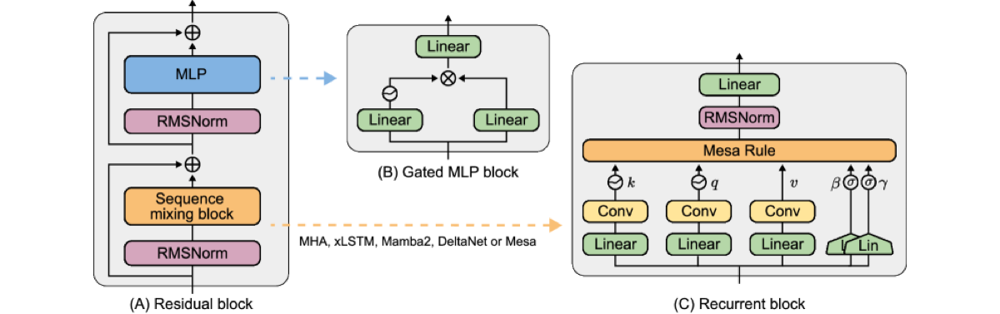

Why it matters왜 중요한가
If many RNNs are secretly doing test-time regression, why settle for one gradient step when you can solve it exactly?
많은 RNN이 사실 test-time 회귀를 한다면, 경사 한 스텝에 만족할 게 아니라 그냥 정확히 풀면 되지 않을까?
A unifying view of modern efficient RNNs is that each one fits a tiny linear "fast-weight" map to predict values from keys, updating it online as tokens arrive. DeltaNet, Mamba2 and friends approximate this with a single gradient step per token. MesaNet asks for the locally optimal answer instead: the closed-form least-squares solution over the entire history, recomputed at every step. The two hard parts — doing this in parallel on accelerators, and doing it stably with forgetting gates — are exactly what the original Mesa layer could not do. This paper fixes both, and does so under a strict apples-to-apples protocol (identical backbone, tokenizer, data order, parameter count; per-model tuned learning rates), so the gains are attributable to the sequence-mixing layer itself.
최신 효율 RNN들의 통합적 관점은, 각자가 키→값을 예측하는 작은 선형 "fast-weight" 맵을 학습하며 토큰이 들어올 때마다 온라인으로 갱신한다는 것이다. DeltaNet·Mamba2 등은 이를 토큰당 경사 한 스텝으로 근사한다. MesaNet은 대신 국소 최적 해, 즉 전체 히스토리에 대한 최소제곱의 닫힌 형식 해를 매 스텝 다시 구한다. 어려운 두 지점 — 가속기에서 병렬로 푸는 것, 그리고 forget 게이트와 함께 안정적으로 푸는 것 — 이 바로 원조 Mesa layer가 못 하던 일이다. 본 논문은 둘 다 해결하고, 엄격한 동일조건 프로토콜(동일 백본·토크나이저·데이터 순서·파라미터 수, 모델별 학습률 튜닝)로 검증해 성능 향상을 sequence-mixing 층 자체에 귀속시킨다.

By the numbers핵심 숫자
dynamic stop (ε=1e-4) avg ~9 at inferenceCG 스텝: 30으로 학습,
동적 정지(ε=1e-4) 시 추론 평균 ~9
complexity (CG ≈ Gated Linear Attn)chunk 병렬 학습 복잡도
(CG ≈ Gated Linear Attn)
same backbone for all baselines140M · 440M · 1B 파라미터,
모든 베이스라인 동일 백본
(trained at 2048 ctx)길이 외삽 평가
(학습 문맥 2048)
(two budgets)SlimPajama 학습 토큰
(두 가지 예산)
matches Transformer on RegBenchin-context recall · MAD 최고;
RegBench는 Transformer 동급
Results — optimal beats approximate, but not yet full attention결과 — 최적이 근사를 이기나, 풀 어텐션엔 아직
| Capability능력 | vs RNNs | vs MHA | Note비고 |
|---|---|---|---|
| In-context recall (SWDE, SQUAD, FDA, NQ…)in-context recall | Best최고 | Below미달 | beats even SWA-1024SWA-1024도 능가 |
| Global reasoning (Lambada, HellaSwag, RACE)글로벌 추론 | Best최고 | Below미달 | RNN-leading, gap to MHARNN 선두, MHA와 격차 |
| MAD synthetic suite | Best최고 | Matches동급 | highest avg accuracy평균 정확도 최고 |
| RegBench in-context learning | Best최고 | Matches동급 | infers grammars from context문맥서 문법 추론 |
| Few-shot word scrambling (GPT-3 tasks)few-shot 글자 재배열 | Strong우수 | Beats능가 | but loses on WMT translation단, WMT 번역은 열세 |
| Long-context PPL @32k장문 PPL @32k | ≈ Gated-DeltaNet, beats GLA/xLSTM/Hawk≈ Gated-DeltaNet, GLA/xLSTM/Hawk 능가 | SWA-1024 still competitiveSWA-1024 여전히 경쟁적 | strong but not dominant강하나 압도는 아님 |
In one diagram한 장의 그림
The idea: optimal vs. approximate test-time training아이디어: 최적 vs. 근사 test-time training
Solve, don't step
The Mesa layer defines its output as the exact minimizer of a cumulative, forget-weighted, regularized squared-error loss over all past (key, value) pairs. Closed form: Δeₜ = Gₜ·(Hₜ+Λ)⁻¹qₜ, where Gₜ = Σ ζ vₖᵀ and Hₜ = Σ ζ kkᵀ are running state matrices and Λ is a learned diagonal regularizer (≥0.25 after softplus).
Mesa layer는 출력을 과거 (키,값) 쌍 전체에 대한 누적·forget 가중·정규화 제곱오차 손실의 정확한 최소해로 정의한다. 닫힌 형식: Δeₜ = Gₜ·(Hₜ+Λ)⁻¹qₜ, 여기서 Gₜ = Σ ζ vₖᵀ, Hₜ = Σ ζ kkᵀ는 누적 상태 행렬, Λ는 학습되는 대각 정규화(softplus 후 ≥0.25)다.
CG = Gated Linear Attention
Inverting (Hₜ+Λ) per token sounds fatal. Instead, conjugate gradient solves the linear system iteratively, and its expensive step — multiplying by (Hₜ+Λ) — is algebraically a Gated-Linear-Attention operation. That makes the solver chunkwise-parallel (O(T)), numerically stable even with forgetting, and able to stop early per head/sequence/token.
토큰마다 (Hₜ+Λ)를 역행렬화하면 치명적일 듯하다. 대신 켤레기울기로 선형계를 반복적으로 풀고, 그 비싼 연산 — (Hₜ+Λ) 곱 — 이 대수적으로 Gated Linear Attention이다. 덕분에 솔버는 chunk 병렬(O(T)), forget 게이트 하에서도 수치적으로 안정, 그리고 헤드·시퀀스·토큰별 조기 종료가 가능하다.
How it works어떻게 작동하나
- Project & gate투영·게이팅From token embeddings, project keys/queries/values, apply a width-4 temporal conv + SiLU, L2-normalize keys and queries, and compute input gate β and forget gate γ ∈ [0,1] via sigmoids.토큰 임베딩에서 키/쿼리/값을 투영하고, 폭-4 시간 convolution + SiLU 후 키·쿼리를 L2 정규화, 입력 게이트 β와 forget 게이트 γ ∈ [0,1]를 sigmoid로 계산한다.
- Accumulate state상태 누적Maintain forget-weighted running sums Gₜ = Σ ζ·vkᵀ (value–key) and Hₜ = Σ ζ·kkᵀ (key covariance) — the sufficient statistics of the in-context regression.forget 가중 누적합 Gₜ = Σ ζ·vkᵀ(값–키)와 Hₜ = Σ ζ·kkᵀ(키 공분산)를 유지 — in-context 회귀의 충분통계량.
- Solve with CGCG로 풀기Run conjugate gradient to compute (Hₜ+Λ)⁻¹qₜ to a tolerance ε; each iteration is a Gated-Linear-Attention matmul, so it parallelizes over chunks during training.켤레기울기로 (Hₜ+Λ)⁻¹qₜ를 허용오차 ε까지 계산; 각 반복이 Gated Linear Attention matmul이라 학습 시 chunk 단위로 병렬화된다.
- Spend compute dynamically연산을 동적으로 소비Trained with 30 CG steps, a dynamic stopping rule (ε=1e-4) cuts the inference average to ~9 steps with matching perplexity — hard contexts (high condition number) get more steps, easy ones fewer.30 CG 스텝으로 학습하되, 동적 정지(ε=1e-4)가 추론 평균을 ~9 스텝으로 줄이며 perplexity는 유지 — 어려운 문맥(높은 조건수)은 더, 쉬운 문맥은 덜 쓴다.
What to take away그래서, 가져갈 것
Optimal TTT is now practical. The "solve it exactly" version of an RNN memory finally trains as fast as a Transformer and beats one-step RNNs on perplexity, recall, and synthetic ICL.
최적 TTT가 이제 실용적. RNN 메모리를 "정확히 푸는" 버전이 드디어 Transformer만큼 빨리 학습되고, 한 스텝 RNN을 perplexity·recall·합성 ICL에서 능가한다.
One algebra unlocks it. Reframing a conjugate-gradient step as Gated Linear Attention is the key move — it lets an iterative solver borrow existing efficient kernels.
대수 하나가 열쇠. 켤레기울기 한 스텝을 Gated Linear Attention로 재해석한 것이 핵심 — 반복 솔버가 기존 효율 커널을 빌려 쓸 수 있게 된다.
Compute becomes adaptive. Condition numbers are bimodal across heads, so dynamic CG stopping gives a principled, per-token compute dial — a rare property for fixed-cost RNNs.
연산이 적응적. 헤드별 조건수가 이봉 분포라, 동적 CG 정지가 원리적인 토큰별 연산 다이얼을 제공 — 고정비용 RNN엔 드문 성질.
A fair-comparison testbed. Identical backbone/data/params across Mamba2, GLA, xLSTM, DeltaNet, Hawk and MHA makes this one of the cleaner head-to-heads of sequence-mixing layers.
공정 비교 테스트베드. Mamba2·GLA·xLSTM·DeltaNet·Hawk·MHA를 동일 백본/데이터/파라미터로 맞춰, sequence-mixing 층의 보기 드물게 깔끔한 정면 비교.